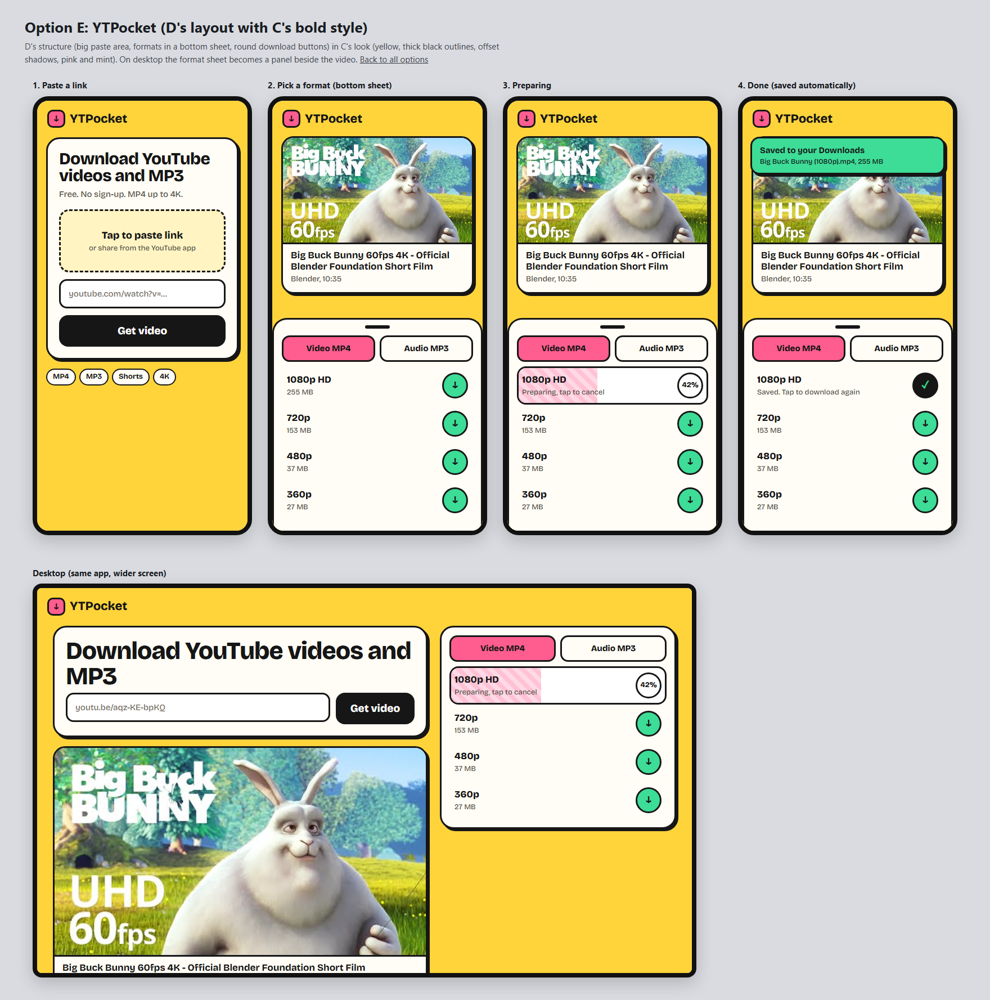
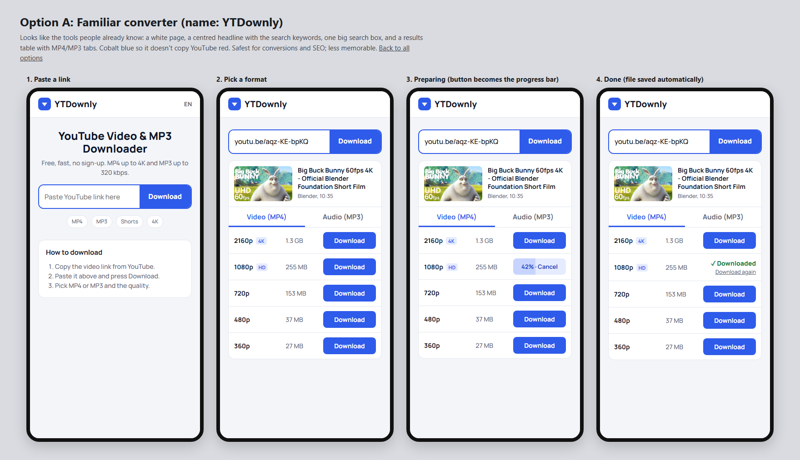
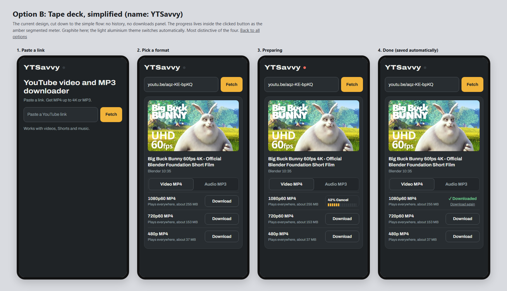
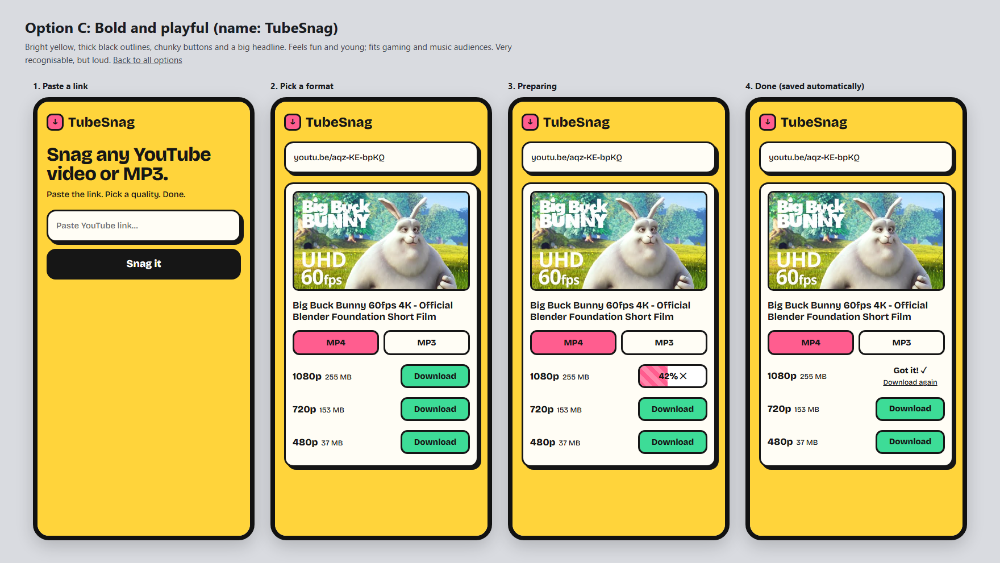
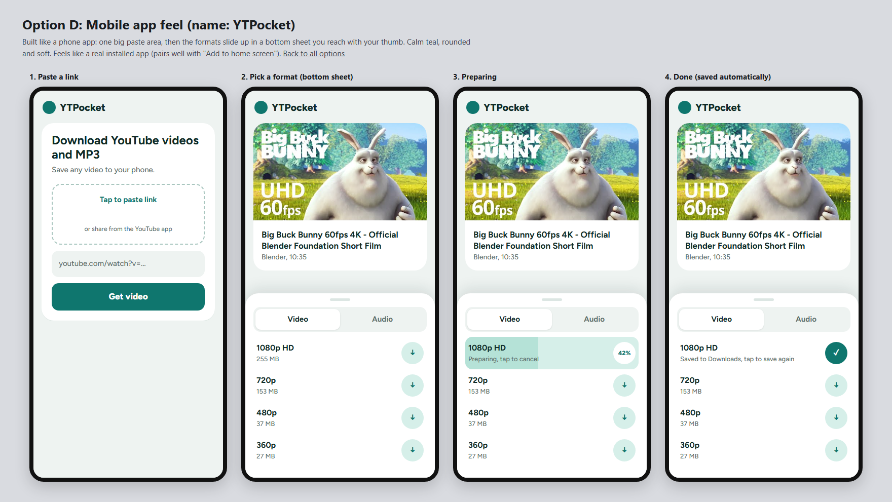

All four use the same simple flow: paste link, Fetch, pick MP4 or MP3, Download (the button shows progress), file saves automatically. No history, no downloads panel. Names are interchangeable with any design. Click an option to see it full size.
Big paste area and bottom-sheet formats, in yellow with thick outlines. Includes a desktop layout.

Looks like tools people already use. Safest, least memorable.

Today's design, simplified. Most distinctive; amber meter progress.

Yellow, thick outlines, chunky buttons. Fun and loud.

Big paste area, formats in a bottom sheet. Feels like an installed app.
